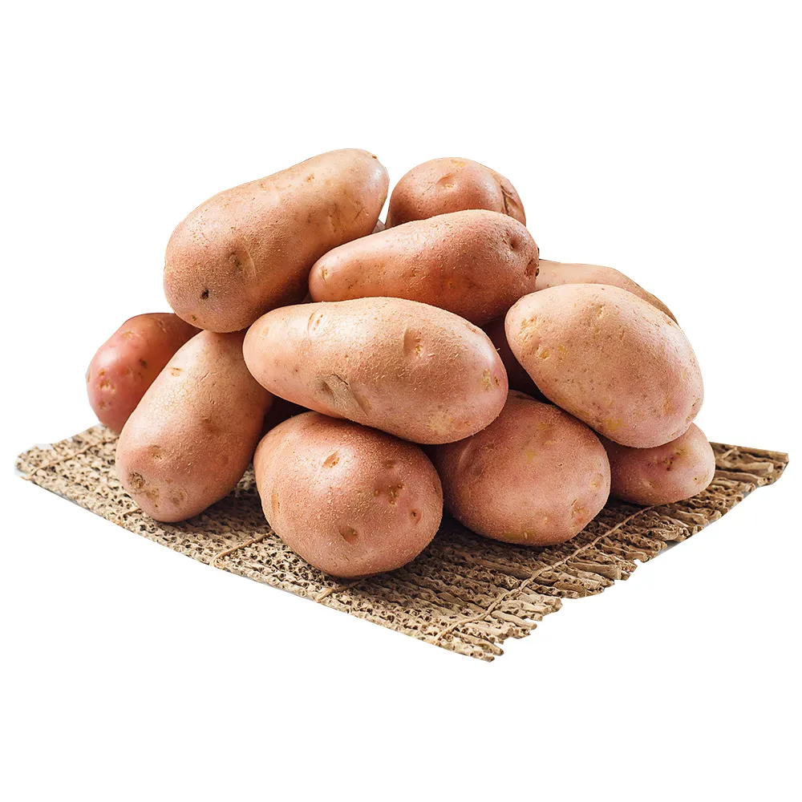
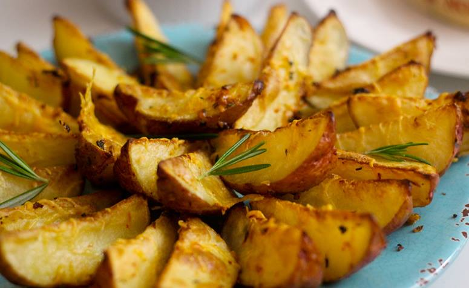

A batata Asterix é uma variedade de batata muito apreciada por seu sabor e textura. Ela é conhecida por sua casca vermelha e polpa amarela e por ter uma textura mais firme e menos água, sendo ideal para frituras e assados.
A batata Asterix é rica em carboidratos, fibras e vitaminas, sendo uma excelente fonte de energia. Ela também contém antioxidantes que ajudam a combater os radicais livres no organismo.
Esta variedade de batata é amplamente utilizada na culinária, por ser uma ótima opção para frituras, purês e outras receitas que exigem uma batata com alto teor de amido e baixa umidade.
